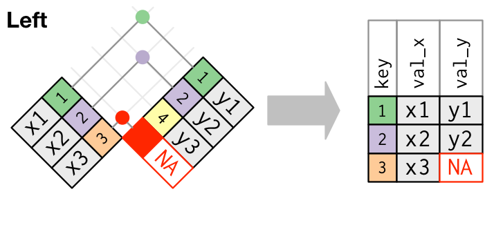

# A tibble: 3 × 4
state sy20_rev sy21_rev sy22_rev
<chr> <dbl> <dbl> <dbl>
1 AL 2023902 2304983 3930833
2 AK 230993 233466 283948
3 AZ 203492 390282 409828Data cleaning and processing in R
2023-06-27
Review
Review from Week 2
General tips and things to keep in mind from talking with several of you:
- Keep all of your variable names lowercase (including dataframes!) — it helps prevent potential problems and errors.
- In order to create a scatterplot or histogram with
ggplot(), you need to make sure the dataframe you want to use is available in your working environment. Reminder: your working environment will be empty when you start RStudio — you’ll need to run each line of code that comes before your plot code in order for it to run successfully. - To run the code for a plot, you can execute it by clicking “Run” or hitting Command + Enter on your keybord if you have either 1) placed your cursor anywhere in the code for the plot or 2) you’ve higlighted all of the lines of code to create your plot (highlighting a single line will not work).
Principles of tidy data
Cleaning your data: One of the most important and under-appreciated stages of good data analysis
“Tidy datasets are all alike, but every messy dataset is messy in its own way.” - Hadley Wickham
Education finance data, like most other data, rarely come to us in a format that is plug-and-play ready for analysis.
A high-quality analysis of your state’s school finance system must start with gathering and cleaning relevant data.
This starts with ensuring that each dataframe of raw data you read into R goes through a process of becoming “tidy” — once you have tidy data, merging and visualizing data becomes much easier.
The process of tidying your data is also helpful for identifying anomalies or outliers in your raw data files.
The principles of “tidy data” provide a helpful vision of what good, clean data should look like
Tidy data follows three rules:
- Each column is a variable
- Each row is an observation
- Each cell is a value
Building tidy datasets will:
• Bring consistency to your data across scripts/projects
• Make it easier to work with functions in the `tidyverse`, which is built to work will with “tidy” data

It takes a bit of work to make data tidy, including the use of functions to reshape your data
Datasets can violate the principles of tidy data in several ways:
- Variables can be embedded across columns: An common example is when multiple columns represent data from different years. In this case, a variable (year) is actually represented by column names instead of being captured in its own “year” column.
- Solution: Pivot your data longer!
It takes a bit of work to make data tidy, including the use of functions to reshape your data, cont.
- A single observation may be spread across multiple rows: This can happen when one column includes multiple variable types within it. And example would be if a dataframe had a “data_type” column that included entries like “n_tested” and “pct_prof”.
- Solution: Pivot your table wider!
# A tibble: 6 × 3
sch_name data_type value
<chr> <chr> <dbl>
1 Alpha Elementary n_tested 230
2 Alpha Elementary pct_prof 0.53
3 Bravo Middle n_tested 492
4 Bravo Middle pct_prof 0.34
5 Charlie High n_tested 434
6 Charlie High pct_prof 0.43pivot_longer() is useful when a variable is embedded across several column names

Live coding example: Using pivot_longer()
Key arguments of the pivot_longer() function:
cols: The names of the columns to pivot usingtidy-selectnames_to: The name for the new character columnvalues_to: The name for the new values column
# PIVOT LONGER EXAMPLE
# load ----
library(tidyverse)
# read in data for analysis
usa_2008_2021 <- read_csv("slides/week_04/data/usa_2008_2021.csv")
# Clean and analyze data ----
# Per-Pupil Education Streams
usa_all_education_streams_long <- usa_2008_2021 |>
# Filter out years that we don't need in our analysis
filter(year > 2007) |>
# Select variables that we want to use to pivot our data longer
select(year, usa_state_pp, usa_local_pp, usa_federal_pp) |>
pivot_longer(cols = usa_state_pp:usa_federal_pp, # These are the columns we want to pivot
names_to = "revenue_source", # The name for the new character column
values_to = "revenue") |> # The name for the new values
# Convert the column created with "names_to" to a nicely-labeled factor
mutate(revenue_source = factor(revenue_source,
# specify the order of values in this variable
levels = c("usa_state_pp",
"usa_local_pp",
"usa_federal_pp"),
# give the variable nice labels
# these need to be the same order as the levels you set!
labels = c("Local", "State", "Federal"))) |>
# create a new column that indicates all of this data is national
mutate(state = "United States") |>
# create a nicely-formatted year column
mutate(year_1 = year - 1,
year_2 = str_sub(as.character(year), start = 3),
year = paste0(year_1, "-", year_2)) |>
# remove intermediate year columns |>
select(-year_1, -year_2) |>
# reorder our columns so that state and year are first
select(state, year, everything())If your data includes data from a single observation spread across multiple rows, use pivot_wider()

Live coding example: Using pivot_wider()
Breaking down the code:
- names_from: The column with values that include multiple variables; will be pivoted into column names.
- values_from: The column with values will be used as cell values after pivoting.
# PIVOT WIDER EXAMPLE
dist_sped_raw <- read_csv("data/dist_sped_raw.csv")
# clean special ed data ---------
dist_sped <- dist_sped_raw |>
pivot_wider(names_from = cat_number, # The column where we are using the value as a column name
values_from = enroll) # The column whose values will be used as the values in the cell Techniques to clean messy data
Cleaning data can be challenging, but it’s easier if you take a systematic approach
| Step | Goal |
|---|---|
| Data import | Ensure your import function is set up to read the data properly |
| Column names | Reformat or manually create column names that are:
|
| Mis-formatted data | Work with functions from base R like as.numeric() or from the tidyverse packages like stringr to clean the data that appear in a different format than you want. |
| Missing data | Identify where in your dataset there are missing variables and/or outliers - this may be more of an iterative process as your explore your data. |
Live coding example: florida_clean.R
# load ---------
options(scipen = 999)
library(tidyverse)
library(readxl)
# load fl revenue raw data
fl_tax_raw <- read_excel("data/1819Tables.xlsx",
sheet = 9)
# skip first row when reading data
fl_tax_raw <- read_excel("data/1819Tables.xlsx",
sheet = 9, skip = 1)
# limit data to max of 67 rows
fl_tax_raw <- read_excel("data/1819Tables.xlsx",
sheet = 9, skip = 1, n_max = 67)
# clean ---------
# fix column names
fl_tax_clean <- fl_tax_raw |>
# convert colnames to lowercase
rename_with(tolower)
# look at column names
names(fl_tax_clean)
# create vector of new column names
new_names <- c("district",
"operating_millage",
"tax_roll_fy18",
"operating_tax_yield",
"required_effort")
# manually replace column names
colnames(fl_tax_clean) <- new_names
# look at column names now
names(fl_tax_clean)
# look at district names
glimpse(fl_tax_clean$district)
# convert district names to title case
fl_tax_clean <- fl_tax_clean |>
mutate(district = str_to_title(district))
# look at district names now
glimpse(fl_tax_clean$district)
# fix a special case - "Desoto" should be "DeSoto"
fl_tax_clean$district[14]
# replace all instances of "Desoto" with "DeSoto"
fl_tax_clean <- fl_tax_clean |>
mutate(district = str_replace_all(district, "Desoto", "DeSoto"))
# check that the above code worked
fl_tax_clean$district[14]Joining datasets
Your data will rarely come to you in a single table. You will need to join functions to merge dataframes together
To join two dataframes, they need to share a common column with a unique identifier.
State departments of education typically assign a unique ID number to each school district. Make sure this is available in your datasets.
Joining datasets on a name (e.g. school or district) can create problems based on:
- Capitalization (Mcgregor v. McGregor)
- Abbreviation (St. Paul v. Saint Paul)
- Mis-spelling (it happens!)
Using left_join() to merge datasets will help preserve your data
Once you have dataframes that share a common ID column, start with your most reliable set of data (typically student count data like ADM or enrollment) and use
left_join()to attach additional data to that table.This approach will preserve your original data, keeping the number of rows (e.g. districts or schools) consistent as you use
left_join()to add data by adding more columns.When a record in the “left” dataframe does not have a match in the “right” dataframe,
left_join()will impute a value ofNAfor all such instances.

Coding example: How to use left_join()
- Example 1: The common ID columns have the same variable names (sch_id)
- Example 2: The common ID columns have different variable names. The sch_clean dataframe’s variable is sch_id, while the sch_el data frame’s variable name is school_id. The column names can be different, but the values within the cells must be the same so we can join them.
# join data ---------
# EXAMPLE 1: Join the ADM, special education, economically disadvantaged, and ELL student data
sch_clean <- sch_adm |>
left_join(sch_ed, by = "sch_id") |>
left_join(sch_sped, by = "sch_id")
# EXAMPLE 2: Join the ELL data
sch_clean <- sch_clean |>
left_join(sch_el, by = c("sch_id" = "school_id"))As you merge dataframes, be sure to use anti_join() to examine missing data
Using the anti_join() function from the dplyr package in R returns all rows in one data frame that do not have matching values in another data frame. Using anti_join() allows you to explore the incongruities in your data.

Coding example: How to use anti_join()
# matching tests --------
# only charlie county, which only has adm of 5
dist_no_area <- dist_summary |>
anti_join(state_dist_area)
# check to make sure there aren't any distircts in the area df
# that arent in our dist_summary df
# no misses!
area_no_dist <- state_dist_area |>
anti_join(dist_summary)Break
10:00
An example with tidycensus
The tidycensus package can provide data at the school district level that may be helpful for school finance analysis
The Census Bureau collects a lot of information that is reported at the school district level. This includes information on topics that are relevant to school finance, like housing.
The tidycensus R package makes it easy to access, explore, and analyze Census Bureau data.
Use install.packages("tidycensus") to download the package in RStudio.

To get started, you’ll need to sign up for an API key with the Census Bureau

In-class exercise
In-class coding example: clean_and_join.R (1/3)
# load -----------
options(scipen = 999)
library(tidyverse)
library(edbuildr)
library(tidycensus)
library(viridis)
library(scales)
# get your own api key from https://api.census.gov/data/key_signup.html
# only run this line of code once after you replace the text below
# with your API key
census_api_key("YOUR API KEY GOES HERE", install = TRUE, overwrite = TRUE)
# get edbuild data
edbuild_fy19 <- masterpull(data_type = "geo")
# load census variables from 2019 acs 5-year estimates
v19 <- load_variables(2019, "acs5", cache = TRUE)
# get mortgage data for unified school districts
mortgage_unified_raw <- get_acs(variables = c("B25101_001", # total households
"B25101_002", # total with a mortgage
"B25101_024"), # total not mortgaged
geography = "school district (unified)",
state = "MN",
year = 2019)
# get mortgage data for elementary school districts
mortgage_elementary_raw <- get_acs(variables = c("B25101_001", # total households
"B25101_002", # total with a mortgage
"B25101_024"), # total not mortgaged
geography = "school district (elementary)",
state = "MN",
year = 2019)
# get mortgage data for secondary school districts
mortgage_secondary_raw <- get_acs(variables = c("B25101_001", # total households
"B25101_002", # total with a mortgage
"B25101_024"), # total not mortgaged
geography = "school district (secondary)",
state = "MN",
year = 2019)
# clean ------------
# clean mortgage data for unified school districts
mortgage_pct_unified <- mortgage_unified_raw |>
# replace vars with more descriptive names
mutate(variable = str_replace_all(variable, "B25101_001", "households"),
variable = str_replace_all(variable, "B25101_002", "with_mortgage"),
variable = str_replace_all(variable, "B25101_024", "no_mortgage")
) |> # close mutate
# remove margin of error column
select(-moe) |>
# pivot variable column into distinct columns
pivot_wider(names_from = variable, values_from = estimate) |>
# calculate percent of households within a school district with a mortgage
mutate(mortgage_pct = with_mortgage / households)
# clean mortgage data for elementary school districts
mortgage_pct_elementary <- mortgage_elementary_raw |>
mutate(variable = str_replace_all(variable, "B25101_001", "households"),
variable = str_replace_all(variable, "B25101_002", "with_mortgage"),
variable = str_replace_all(variable, "B25101_024", "no_mortgage")
) |> # close mutate
select(-moe) |>
pivot_wider(names_from = variable, values_from = estimate) |>
mutate(mortgage_pct = with_mortgage / households)
# clean mortgage data for secondary school districts
mortgage_pct_secondary <- mortgage_secondary_raw |>
mutate(variable = str_replace_all(variable, "B25101_001", "households"),
variable = str_replace_all(variable, "B25101_002", "with_mortgage"),
variable = str_replace_all(variable, "B25101_024", "no_mortgage")
) |> # close mutate
select(-moe) |>
pivot_wider(names_from = variable, values_from = estimate) |>
mutate(mortgage_pct = with_mortgage / households)
# NOTE: this data isn't really that useful for mn!In-class coding example: clean_and_join.R (2/3)
# join ----------
# join unified and elementary data by binding rows
mortgage_pct_mn <- mortgage_pct_unified |>
bind_rows(mortgage_pct_elementary) |>
# filter out summary row
filter(GEOID != "2199999") |>
# arrange from largest to smallest district
arrange(-households)
# join edbuild and census data using left_join
edbuild_mortgage_mn <- edbuild_fy19 |>
filter(State == "Minnesota") |>
left_join(mortgage_pct_mn, by = c("NCESID" = "GEOID"))
# do the join again, but this time select for the columns we want to keep
# to avoid duplicates like district.x and district.y
edbuild_mortgage_mn <- edbuild_fy19 |>
filter(State == "Minnesota") |>
left_join(mortgage_pct_mn |>
select(GEOID, households, with_mortgage, mortgage_pct),
by = c("NCESID" = "GEOID"))
# use anti_join() to check for districts with no mortgage data
edbuild_mortgage_mn_no_match <- edbuild_fy19 |>
filter(State == "Minnesota") |>
anti_join(mortgage_pct_mn |>
select(GEOID,households, with_mortgage, mortgage_pct),
by = c("NCESID" = "GEOID"))
# run the reverse anti_join to see if the census data has
# districts not included in the edbuild table
mortgage_edbuild_mn_no_match <- mortgage_pct_mn |>
select(GEOID,households, with_mortgage, mortgage_pct) |>
anti_join(edbuild_fy19 |>
filter(State == "Minnesota") ,
by = c("GEOID" = "NCESID"))In-class coding example: clean_and_join.R (3/3)
# plot -----------
# first plot of the joined dataset
ggplot(edbuild_mortgage_mn) +
geom_point(aes(x = MHI, y = mortgage_pct,
color = StPovRate, size = ENROLL),
alpha = .7) +
scale_size_area(max_size = 10, labels = label_comma()) +
scale_x_continuous(labels = label_dollar()) +
scale_y_continuous(labels = label_percent()) +
scale_color_viridis(labels = label_percent()) +
labs(x = "MHI", y = "Percent of households with a mortgage",
color = "Poverty rate", size = "Enrollment") +
theme_bw()
# facet by sdType
ggplot(edbuild_mortgage_mn) +
geom_point(aes(x = MHI, y = mortgage_pct,
color = StPovRate, size = ENROLL),
alpha = .7) +
scale_size_area(max_size = 10, labels = label_comma()) +
scale_x_continuous(labels = label_dollar()) +
scale_y_continuous(labels = label_percent()) +
scale_color_viridis(labels = label_percent()) +
labs(x = "MHI", y = "Percent of households with a mortgage",
color = "Poverty rate", size = "Enrollment") +
facet_wrap(~sdType) +
theme_bw()
# filter out secondary districts and create better labels for
# elementary and unified districts
ggplot(edbuild_mortgage_mn |>
filter(sdType != "secon") |>
mutate(sdType = case_when(sdType == "elem" ~ "Elementary",
sdType == "uni" ~ "Unified"))) +
geom_point(aes(x = MHI, y = mortgage_pct,
color = StPovRate, size = ENROLL),
alpha = .7) +
scale_size_area(max_size = 10, labels = label_comma()) +
scale_x_continuous(labels = label_dollar()) +
scale_y_continuous(labels = label_percent()) +
scale_color_viridis(labels = label_percent()) +
labs(x = "MHI", y = "Percent of households with a mortgage",
color = "Poverty rate", size = "Enrollment") +
facet_wrap(~sdType) +
theme_bw()
# same chart, but filter allow for free x+y axis scales
ggplot(edbuild_mortgage_mn |>
filter(sdType != "secon") |>
mutate(sdType = case_when(sdType == "elem" ~ "Elementary",
sdType == "uni" ~ "Unified"))) +
geom_point(aes(x = MHI, y = mortgage_pct,
color = StPovRate, size = ENROLL),
alpha = .7) +
scale_size_area(max_size = 10, labels = label_comma()) +
scale_x_continuous(labels = label_dollar()) +
scale_y_continuous(labels = label_percent()) +
scale_color_viridis(labels = label_percent()) +
labs(x = "MHI", y = "Percent of households with a mortgage",
color = "Poverty rate", size = "Enrollment") +
facet_wrap(~sdType, scales = "free") +
theme_bw()Homework assignment
This week’s assignment
Reading assignment
Coding task
Clean your state’s district data and make sure that you have all of the data you need to model your state’s funding formula and the potential policy changes you want to make. This may require joining dataframes, pivot_longer(), pivot_wider() and/or using mutate() to merge, reshape, and tidy data from your state.
Ultimately, you’ll want to produce a single dataframe where:
- Each row represents a single LEA (traditional district or charter school)
- Each column represents a single variable
- All of the data elements that go into your current formula are present in the dataframe.
If you need to join more than two dataframes, just start with joining two dataframes for this assingment. We can work on building the full dataset you’ll need to model your formula over the coming weeks.
To get started, a template R script is included: scripts/dist_clean.R – please use that file to load, clean, and save your tidy data.
As always, once you’ve completed the assignment, be sure to commit and push to GitHub!